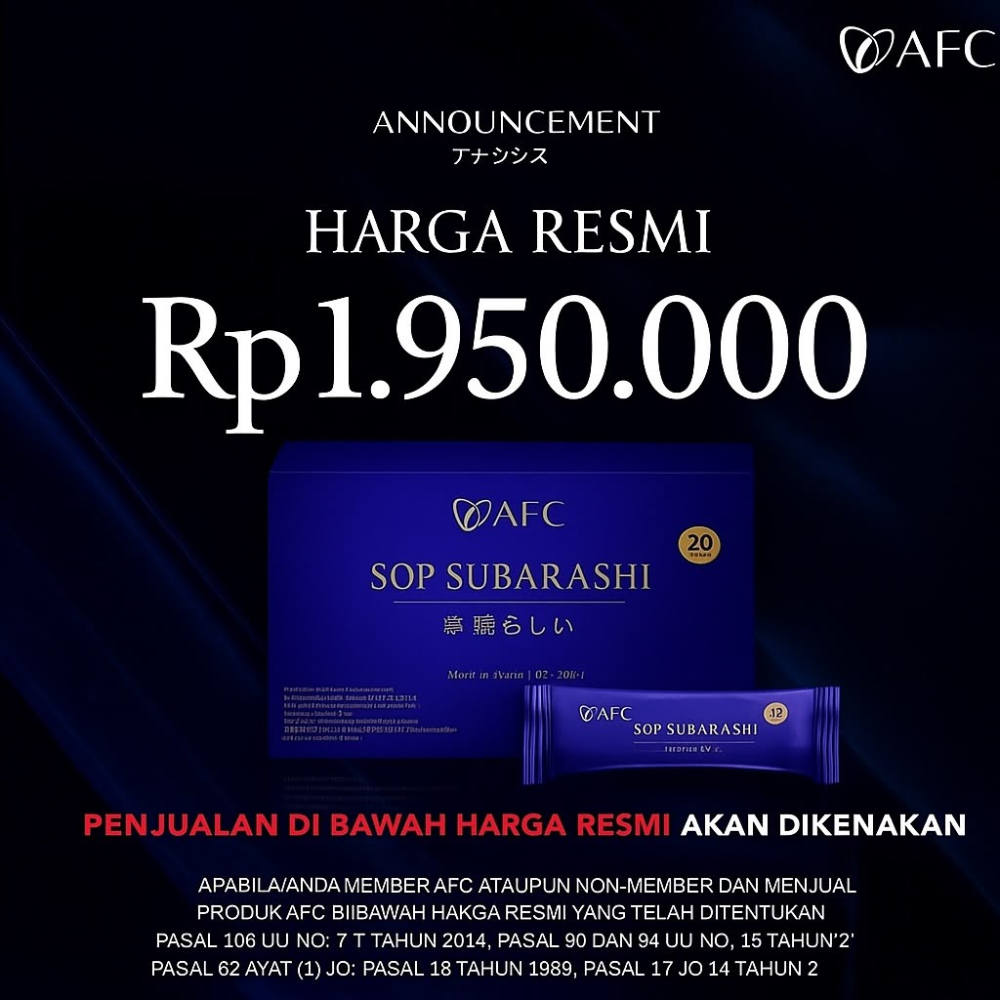

PROMO RUBY
Harga Normal
Rp 3.900.000
Harga Promo
Rp 1.950.000
✨ Sudah bisa langsung terdaftar menjadi Member Resmi AFC ✨
Bantu proses regenerasi sel tubuh dan tingkatkan daya tahan tubuh Anda menggunakan produk makanan kesehatan berpaten fungsi asli Jepang dari AFC.
Harga Normal
Harga Promo
✨ Sudah bisa langsung terdaftar menjadi Member Resmi AFC ✨
Klik pada tab di bawah ini untuk melihat detail fakta klinis dan brosur resmi dari masing-masing produk kami.


Katalog suplemen makanan premium dengan jaminan keaslian penuh langsung dari produsen farmasi Jepang.

Mengandung Marine Placenta dan Sardine Peptide. Membantu proses regenerasi sel, memelihara elastisitas pembuluh darah, dan menjaga stabilitas tekanan darah.
Harga Resmi
Rp 1.950.000

Suplemen dengan konsentrat Lactic Acid Bacteria (8 Triliun Probiotik), Salmon Milt DNA, dan Fucoidan untuk mengoptimalkan sistem imunitas serta kecantikan kulit.
Harga Resmi
Rp 1.800.000

Nutrisi premium terpaten khusus untuk memulihkan kesehatan mata serta mengoptimalkan sirkulasi darah ke otak untuk meningkatkan fokus harian.
Harga Resmi
Rp 1.800.000
Produk AFC diproduksi dengan standar kualitas tinggi untuk memastikan manfaat terbaik bagi tubuh Anda.
Bukan sekadar klaim testimoni, produk AFC memiliki paten fungsi resmi yang telah teruji secara klinis di laboratorium.
Seluruh produk yang dipasarkan di Indonesia dijamin aman karena telah memiliki izin edar resmi dari BPOM dan sertifikasi Halal.
Diproduksi oleh Asayama Family Club (AFC), salah satu perusahaan farmasi tertua dan terbesar di Jepang yang terdaftar di Tokyo Stock Exchange.
Seluruh produk impor AFC Japan diproduksi di bawah pengawasan ketat dan lolos uji klinis laboratorium terhadap kontaminasi elemen berbahaya dengan hasil resmi "Not Detected".

Pengujian resmi sampel produk secara periodik menggunakan alat ukur berpresisi tinggi di Jepang.

Sertifikasi kemurnian dan kebersihan berkala dari lembaga penjamin mutu independen Jepang.

Standarisasi kelayakan ekspor penuh untuk memastikan produk aman dikonsumsi harian.